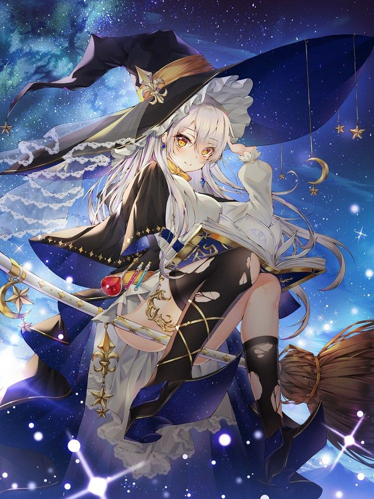

服従の魔女
ショップの女を服従させたのも
プレイヤーや服従の魔女自身を女の子に変身させたのも
プレイヤーにとって都合の良いボタンを設置して騙して呪文をかけたのも(enemy-text-appear限定)
全て服従の魔女である
HP 昼スポーン時 425 夜スポーン時 845
魔法の種類
氷魔法 一定ターン凍らされる魔法をプレイヤーにかける
攻撃魔法 プレイヤーから一定のHPを奪う
悪魔の呪魔法(夜じゃないと失敗する) 普通の女に悪魔の呪文をかけ乗っ取って服従させる(20人まで)
悪魔の呪文をかけられた普通の女は服従の魔女と一緒にプレイヤーを攻撃する
問題の魔法 画面下にクイズを出す 正解するとHPとMPが全回復 不正解すると一定ターン呪われる
変身魔法 一定ターン女の子にする魔法をプレイヤーにかける
ドロップアイテム なし